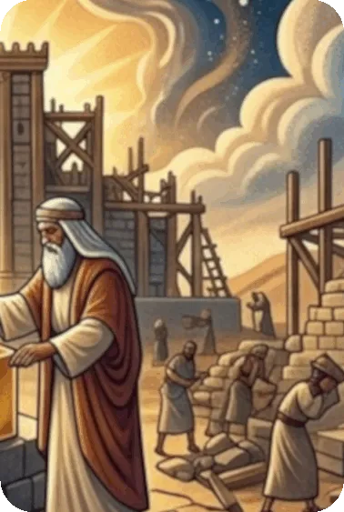

Will the people of God reconsider their priorities, take courage, and act on the basis of God’s promises? God sought to warn the people to heed His words. Not only did God warn them, but He also offered promises through His servant Haggai to motivate them to follow Him. Because the people of God reversed their priorities and failed to put God in first place in their lives, Judah was sent into Babylonian exile. In response to Daniel’s prayer and in fulfillment of God’s promises, God directed Cyrus the Persian king to allow the Jews in exile to go back to Jerusalem. A group of Jews returned to their land with great joy, put God first in their lives, worshiped Him, and began to rebuild the Temple of Jerusalem without the aid of the local people who lived in Israel. Their courageous faith was met with opposition from the local people as well as the Persian government for approximately 15 years.
Haggai sought to challenge the people of God concerning their priorities. He called them to reverence and glorify God by building the Temple in spite of local and official opposition. Haggai called them not to be discouraged because this Temple would not be quite as richly decorated as Solomon’s. He exhorted them to turn from the uncleanness of their ways and to trust in God’s sovereign power. The Book of Haggai is a reminder of the problems the people of God faced at this time, how the people courageously trusted in God, and how God provided for their needs.
As with most of the books of the minor prophets, Haggai ends with promises of restoration and blessing. In the last verse, Haggai 2 : 23, God uses a distinctly messianic title in reference to Zerubbabel, “My Servant” (Compare 2nd Samuel 3 : 18; 1st Kings 11 : 34; Isaiah 42 : 1 – 9; Ezekiel 37 : 24, 25). Through Haggai, God promises to make him like a signet ring, which was a symbol of honor, authority, and power, somewhat like a king’s scepter used to seal letters and decrees. Zerubbabel, as God’s signet ring, represents the house of David and the resumption of the messianic line interrupted by the Exile. Zerubbabel reestablished the Davidic line of kings which would culminate in the millennial reign of Christ. Zerubbabel appears in the line of Christ on both Joseph’s side (Matthew 1 : 12) and Mary’s side (Luke 3 : 27).
Summary of the Book of Haggai from GotQuestions.org — is a popular Christian website and "parachurch" ministry that provides answers to a vast array of questions about the Bible, theology, and spiritual life.
Do you have a question? Submit your Bible Questions to GotQuestions.org No need to sign up, just use your email to receive notifications from any answers. Also browse their website for many questions that may answer your questions.
For personal questions, always pray first to God and seek answers through deep prayers. That may answer deep questions in your heart, and mind, as only God, Holy Spirit and Jesus can see through and through on your feelings, thoughts and situation, better than any man can.